ASSEMBLY GUIDE
CoreX 組み立てガイド
純正Cornixの右側を、CoreXの交換基板とトラックボールに組み替えます。写真と同じ、遠い側のJ3にトラックボールをつなぐプロトタイプ向けの手順です。右のファームは出荷時に書き込み済み。左側は分解せず、最後にファームを書き換えます。
用意するもの
純正のケース、トッププレート、フォーム、バッテリー、スイッチ、キーキャップ、ネジを再利用します。外した部品はまとめて保管してください。
バッテリーコネクターは配線を引っ張らずに外し、アルミケースのネジは強く締め込まないでください。どちらも傷めると交換や修理が必要になります。
- 純正CornixとCoreXの交換基板
- センサー基板入りのトラックボールケース、FPCケーブル、ボール、固定用ネジ2本
- ネジに合うサイズのプラスドライバーと星型ドライバー
- キーキャッププラー、スイッチプラー、ピンセット
- 外したネジを入れる小皿など
- PCとデータ通信できるUSBケーブル
分解する
配列を変更している場合は、作業前にVialの「File → Save current layout」で保存しておきます。
- 電源をOFFにし、USBケーブルを抜きます。右側のキーキャップとスイッチを取り外します。
- ドライバーを使い分けて、ケースのネジをすべて外します。1か所はシールに隠れているので、シールを剥がして外してください。
- 先にマイコンカバーを持ち上げ、その後トッププレートを外します。バッテリーの配線がつながっているので、持ち上げすぎないようにします。
- バッテリーのケーブル側コネクターの樹脂部分をつかみ、ゆっくり抜きます。配線を引っ張ったり、基板側のソケットをこじったりせず、ピンセットが金属端子に触れないようにしてください。
- 純正基板を取り出します。交換基板の袋に入れ替えて保管し、小さな部品に他の物が当たらないようにします。
カバーやプレートがすっと持ち上がらないときは、ネジが残っていないか確認してください。無理にこじ開けないでください。

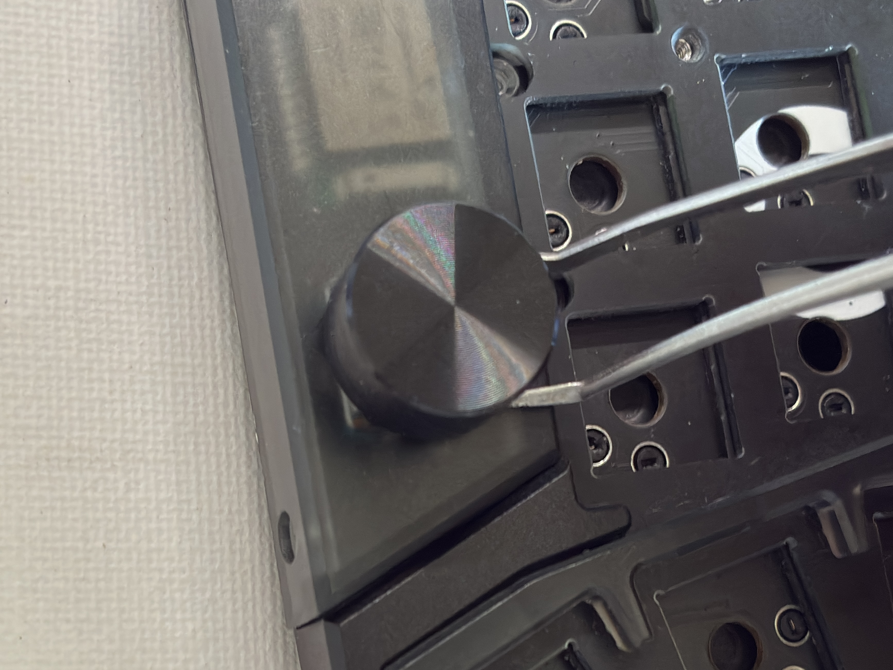
01拡大エンコーダーのつまみ
つまみとマイコンカバー付近。分解時に外す部品を確認します。

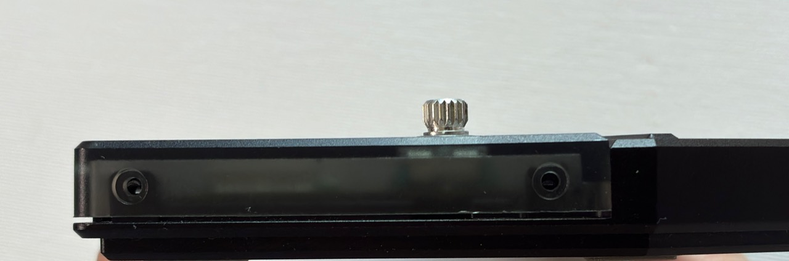
02拡大マイコンカバー
カバー側面のネジ穴と、ケースとの合わせ目。

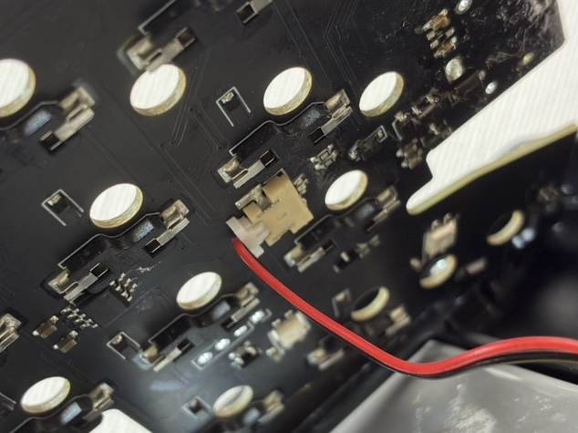
03拡大バッテリーコネクターの位置
純正基板の裏側。赤と黒の配線がバッテリーにつながっています。

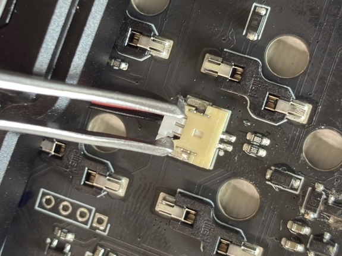
04拡大コネクターをつかむ位置
配線を引っ張らず、ケーブル側のコネクターの樹脂部分をつかみます。
基板を入れ替える
- 交換基板にフォーム、その上にトッププレートを重ね、スイッチの穴を合わせます。
- 四隅のスイッチを取り付けて仮固定します。フォームのずれや折れ込みがないか確認してください。

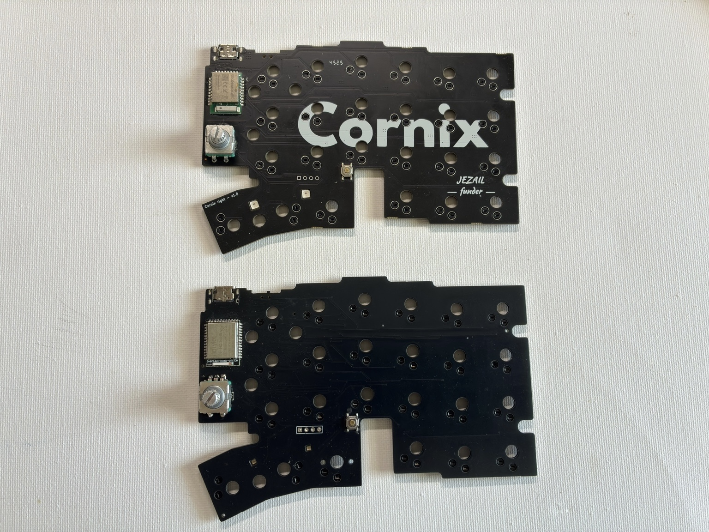
05拡大純正基板と交換基板
上が純正Cornixの右基板、下がCoreXの交換基板です。

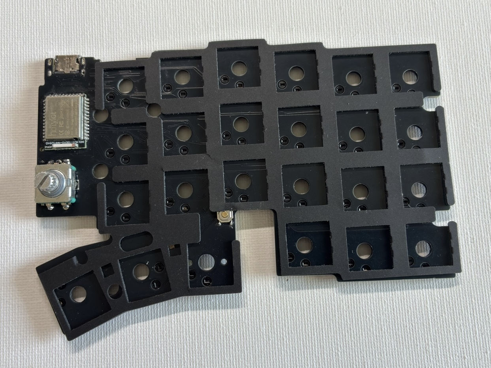
06拡大フォームを重ねる
交換基板にフォームを重ね、スイッチの穴を合わせます。

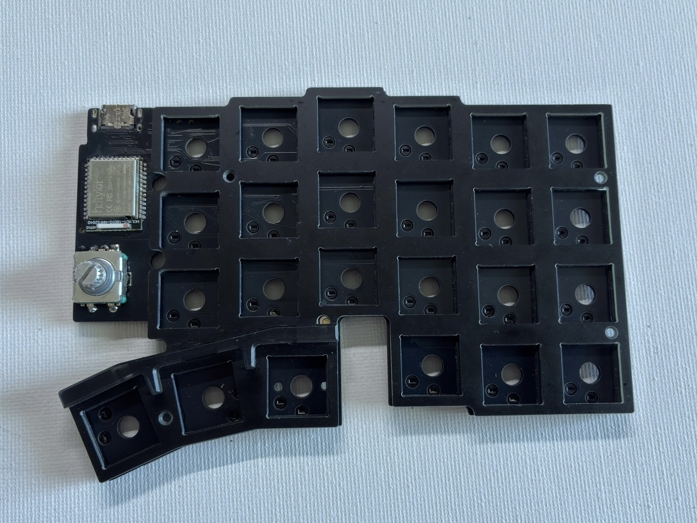
07拡大トッププレートを重ねる
フォームの上にトッププレートを重ねた状態です。

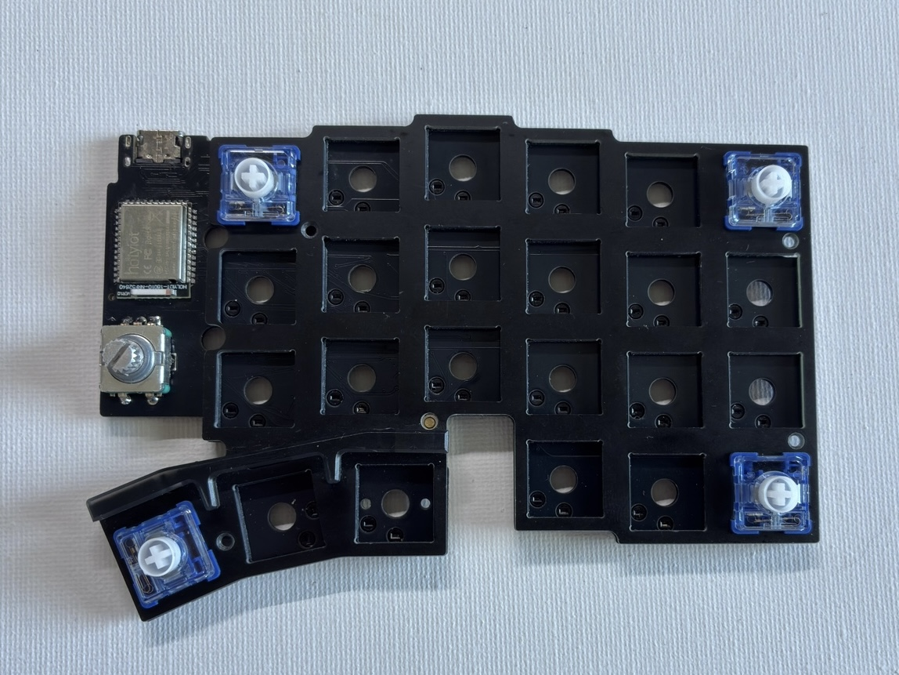
08拡大四隅のスイッチで仮固定する
四隅にスイッチを取り付け、基板・フォーム・トッププレートのずれを防ぎます。
トラックボールを接続する
USBとバッテリーは外したまま作業します。使うのはD110付近のJ3です。親指側のD125横にあるコネクターは使いません。
- トラックボールケースを手で支えながら、FPCケーブルをプレートと基板の穴に通し、裏側へ出します。ケースをケーブルでぶら下げないでください。
- J3の茶色のストッパーを、ピンセットなどでそっと上げます。コネクター本体を持ち上げないようにします。
- 基板のコネクターがある面を上に向け、FPCの金属端子が露出している面を下、基板側にして差し込みます。
- ケーブルがまっすぐ奥まで入っていることを確認してから、ストッパーを下げます。
ストッパーを閉じたまま押し込んだり、ケーブルを強く引き抜いたりしないでください。

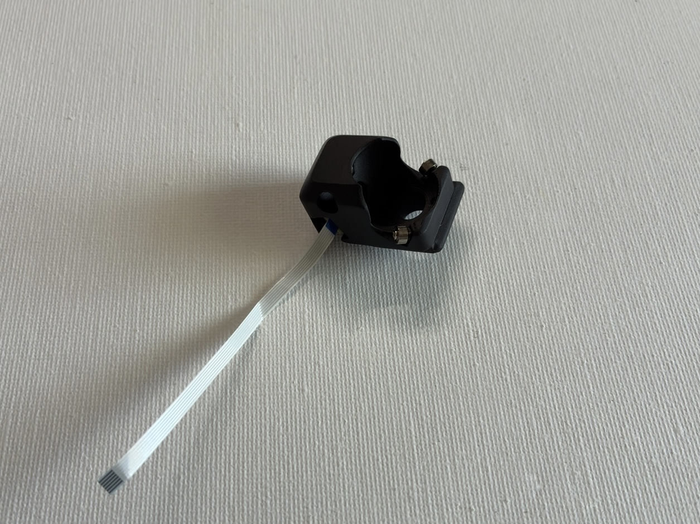
09拡大トラックボールケースとケーブル
ケースから出ている薄い平たいケーブルがFPCケーブルです。

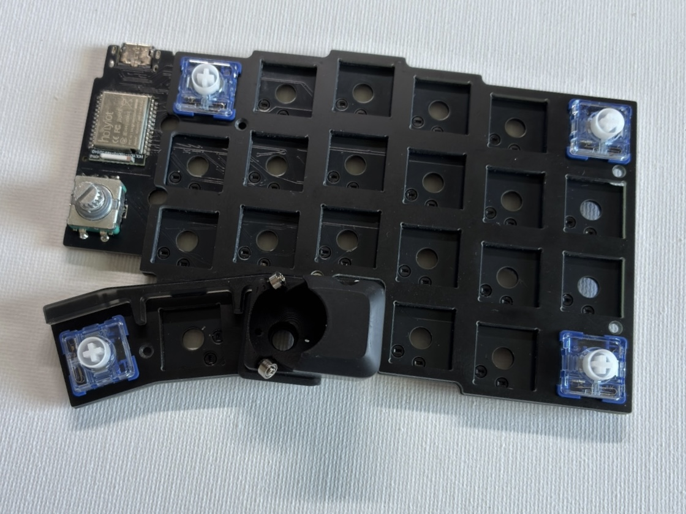
10拡大トラックボールケースの取り付け位置
親指側にケースを配置した状態。写真ではボールを外しています。

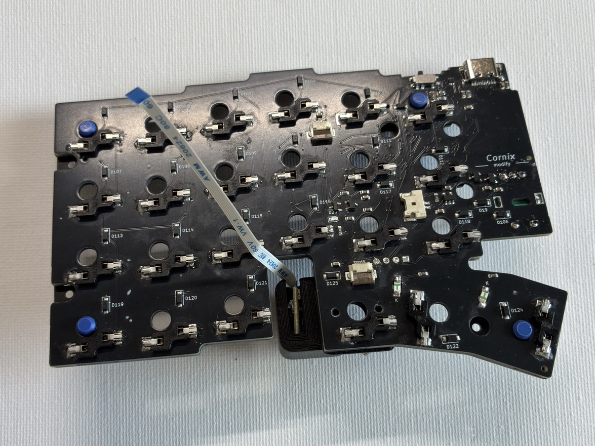
11拡大FPCケーブルを裏側へ通す
トッププレートと基板の開口部から、ケーブルを基板の裏側へ出します。

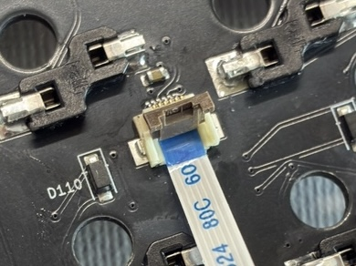
12拡大J3にケーブルを差し込む
D110付近にある遠い側のコネクターです。写真は茶色のストッパーを開いた状態です。

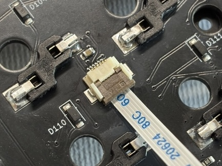
13拡大ストッパーを閉じる
ケーブルをまっすぐ差し込み、ストッパーを閉じて固定した状態です。
動作確認・固定
右はJ3用のファームを書き込み済みなので、そのまま確認できます。公開されているJ4用の右ファームで上書きしないでください。
- 基板を金属に触れない場所へ置き、バッテリーを外したまま右をPCにUSB接続します。ボールをケースに入れて回し、ポインターが動くか確認します。
- USBを抜いてから、基板の裏側からネジ2本でトラックボールケースを固定します。ケーブルを挟んだり、引っ張ったりしない位置に収めます。
- 一度USBをつなぎ、固定後もボールが動くことを確かめてから、USBを抜きます。
- バッテリーのコネクターを、純正と同じ向きで交換基板に差し込みます。極性は純正Cornixと同じです。無理な力をかけずに接続してください。
- USBをつなぎ、充電中に基板裏の赤い充電LEDが点灯することを確認します。満充電など、充電していないときは点灯しない場合があります。
- USBを抜き、電源をOFFにしてからケースへ戻します。
ボールが動かない場合は、先へ進む前に「補足」の接続確認を行ってください。ケーブルやセンサー基板に触る前にはUSBを抜きます。

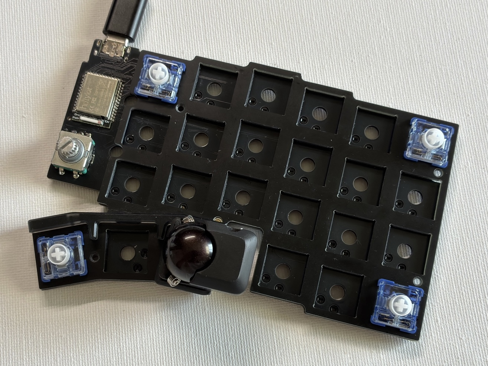
14拡大USBで動作を確認する
USBを接続し、ボールを入れた状態。ボールを回してポインターの反応を確認します。

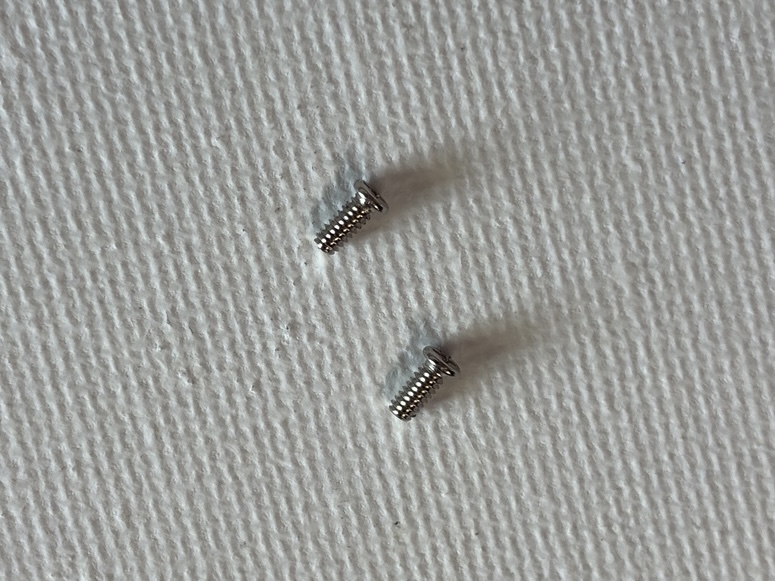
15拡大固定用ネジ2本
トラックボールケースの固定に使うネジです。

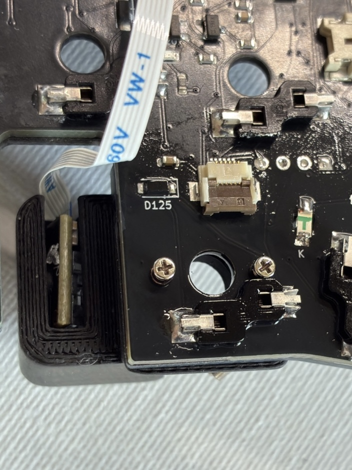
16拡大裏側からケースを固定する
基板の裏からネジ2本で固定した状態です。D125横のコネクターは使用していません。
ケースに戻す
- スライドスイッチカバーの内側のくぼみに、基板のスイッチを合わせます。ずれたまま押し込むとスイッチが壊れることがあります。
- バッテリーの配線とFPCケーブルを挟まないように収め、基板・フォーム・トッププレートをケースにセットします。
- 浮きがないことを確認し、マイコンカバーを戻してネジ留めします。
- 残りのスイッチとキーキャップを取り付けます。
浮いた基板をネジで押し下げないでください。スイッチカバーやケーブルの位置を先に確認します。
ネジは部品が動かなくなる程度に締めます。強く締め込むと、アルミケースのネジ穴を傷めます。

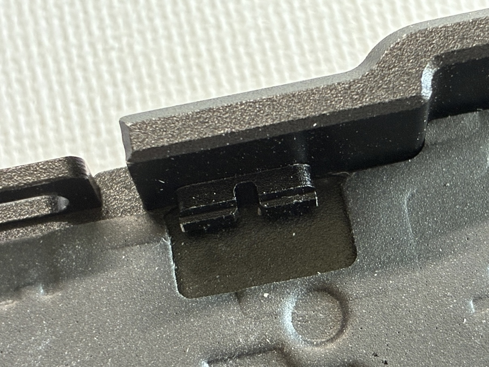
17拡大スイッチカバーのくぼみ
ケース内側のスイッチカバー。中央のくぼみに、基板側のスイッチを合わせます。

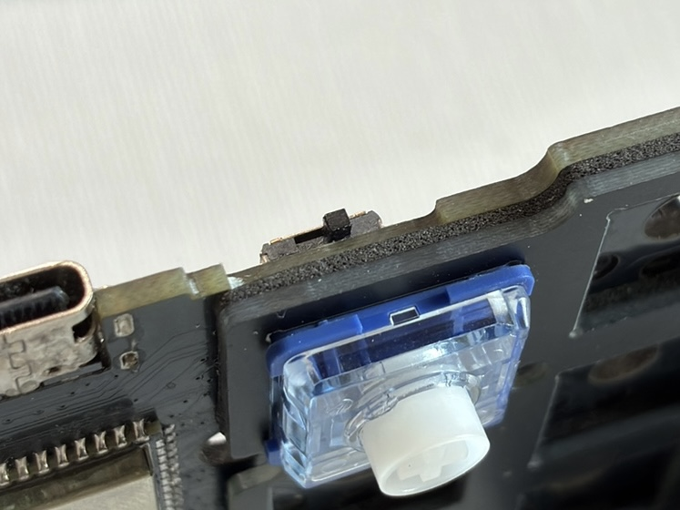
18拡大基板側のスライドスイッチ
基板の端から出ている黒いつまみを、スイッチカバーの位置に合わせます。

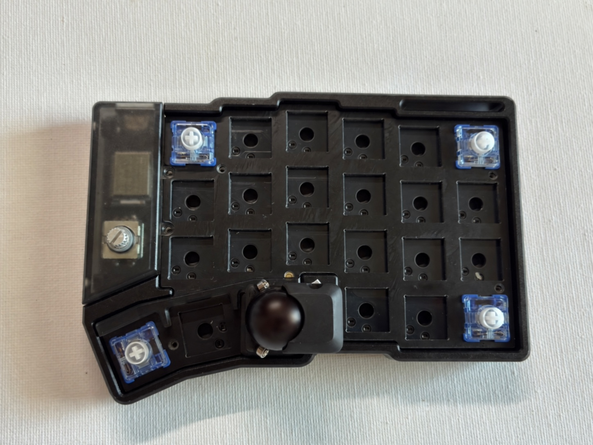
19拡大アルミケースに戻す
基板とマイコンカバーをケースに戻した状態。残りのスイッチとキーキャップを取り付ける前の写真です。

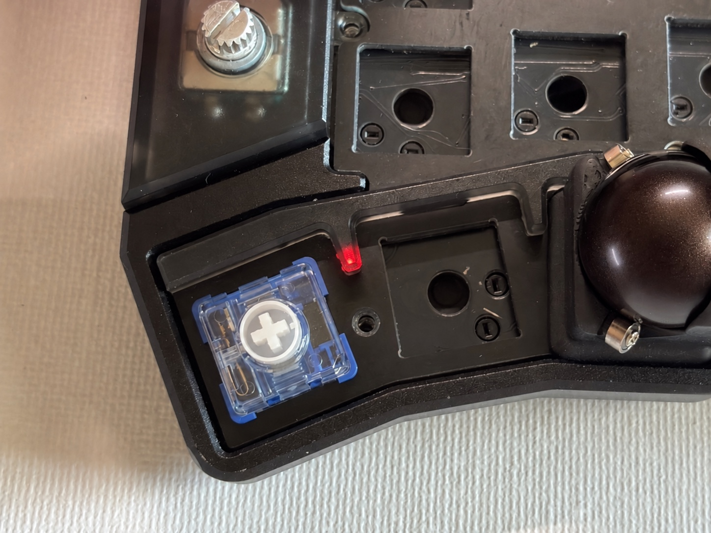
20拡大右側のLED
親指キー付近からLEDが見える状態です。
左を書き換えて、左右をつなぐ
書き換えるのは純正Cornixの左側だけです。右は出荷時のファームをそのまま使います。
- 純正左を通常モードでUSB接続し、Vialの「File → Save current layout」で配列を保存します。元のファームのバージョンも控えてください。
- 左用ファームをダウンロードします。PCに左だけを接続し、RESETを素早く2回押して、表示されたUSBドライブへ「CoreX-Left-v0.10.1.uf2」をコピーします。再起動してドライブが消えたら、左のUSBを抜きます。
- 左右に電池をつなぎ、電源をONにします。登録する1セットだけを近くに置き、右をPCにUSB接続します。
- 左右のRESETを1回ずつ続けて押します。未登録の左右は起動後60秒間に自動で接続します。左のキーで文字を入力できれば接続完了です。次回からは電源ONでつながります。
- 左右のキーとボールを確認します。初期配列では、ボールを動かした直後のJ・K・Lが左・中・右クリック、Iを長押ししながらボールを回すとスクロールです。
- Bluetoothで使う場合は、PCとのペアリングへ進みます。キー配列や感度の変更は使い方を参照してください。
補足
トラックボールが動かないときは、USBを抜き、電源をOFFにしてから次の箇所を確認します。センサー基板はケースに入れた状態で出荷しています。
- 交換基板側のFPC：J3につながっているか、端子の向き、差し込みの深さ、ストッパーが閉じているかを確認します。
- センサー基板の位置：ケーブルを引くと基板が浮くことがあります。浮いていれば、基板本体をそっと押してケースの奥へ戻します。
- センサー側のFPC：抜けていたら、小さなストッパーを上げて元の向きで差し込み直し、ストッパーを閉じます。向きが分からなければ、無理に差し込まず配布・購入時の連絡先へご連絡ください。
- 確認が終わったらUSBをつなぎ直し、ボールを回します。
センサー基板とコネクターは小さいため、ケーブルで引っ張らず、基板本体を支えて扱ってください。
バッテリーコネクターは国内での入手が難しい部品です。ちぎれたり破損した場合は作業を止め、配布・購入時の連絡先へご連絡ください。交換品を用意します。

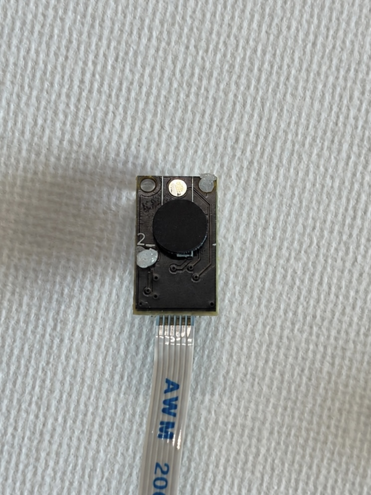
21拡大センサー基板の裏面
センサー基板の裏面とFPCケーブル。部品の確認用です。

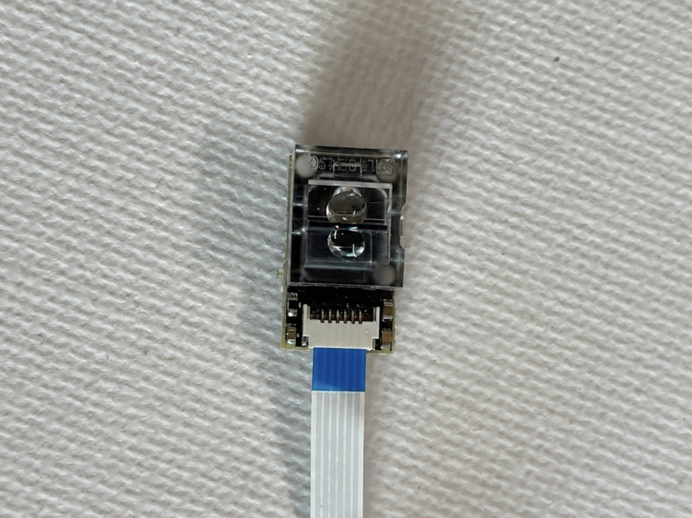
22拡大センサー側のFPC接続
透明なレンズ側から見たセンサー基板。ケーブルの接続位置と向きが分かります。

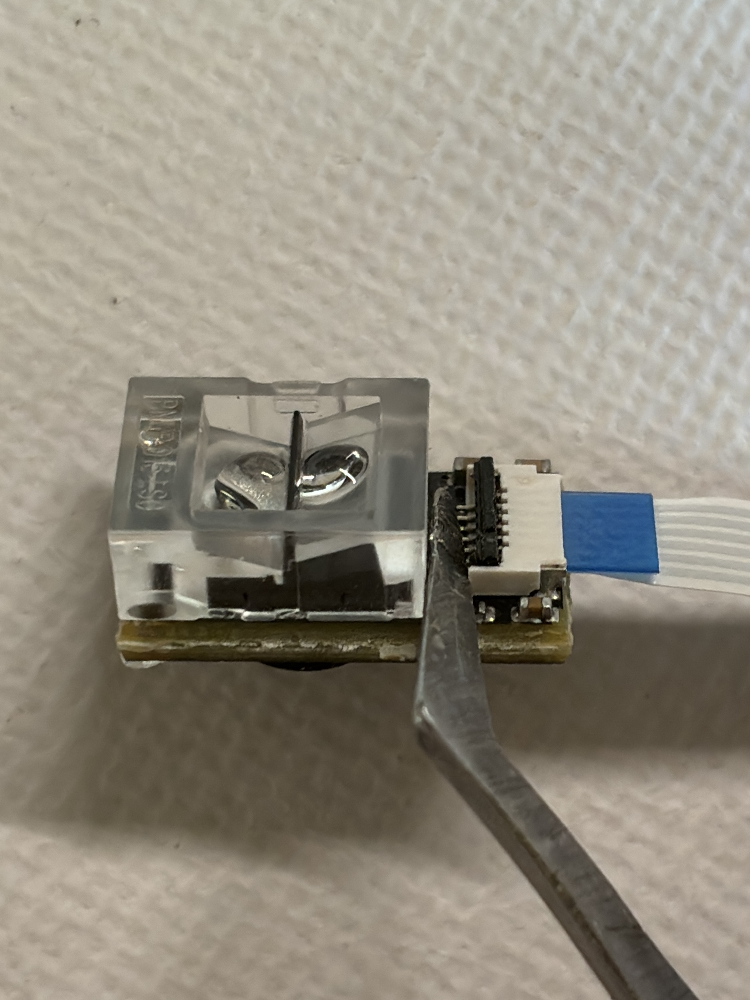
23拡大センサー側のストッパー
センサー基板側のコネクターの拡大。ストッパーは小さいため、位置を確かめてから操作します。